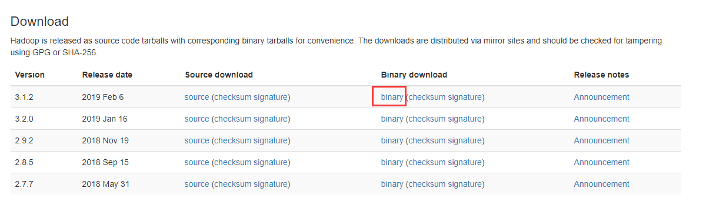
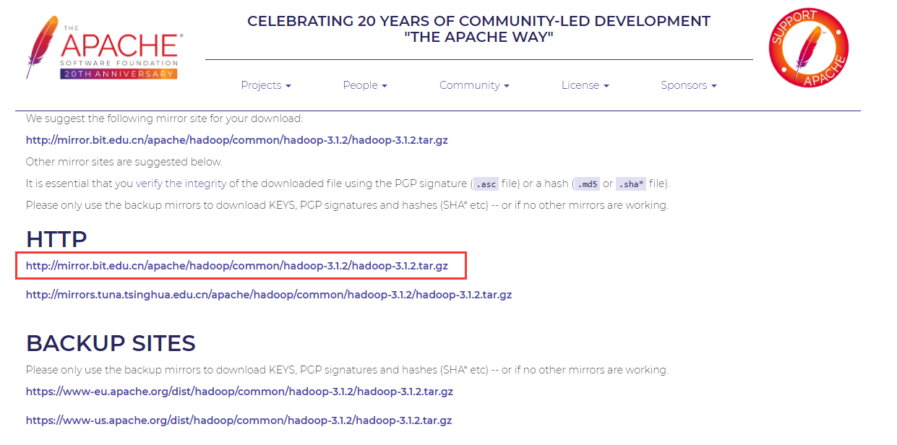
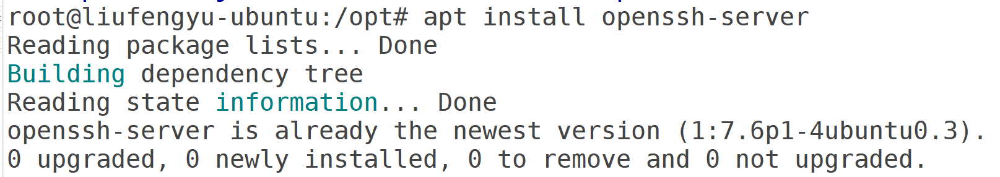
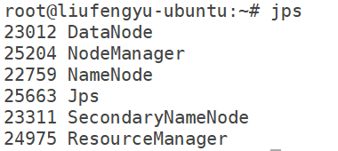
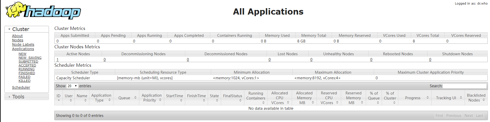
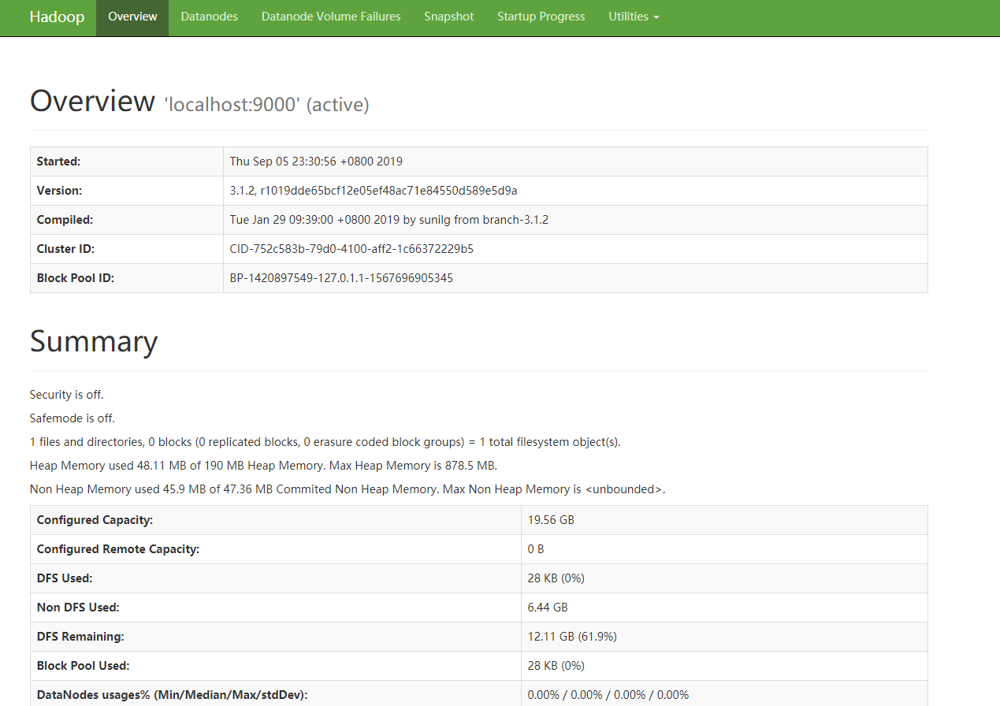
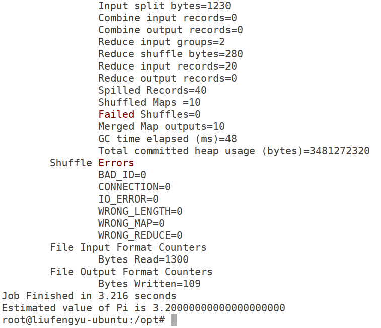

版本
- JDK: 8u221
- Hadoop: 3.1.2
下载
首先点击这里，进入Hadoop官网下载页面。

选择3.0.3版本进行下载，然后点击binary地址进行下载

选中官方推荐的地址即可下载，其他地址也可用（建议采用迅雷等下载工具下载，速度比较会快很多，上传至UBUNTU系统）
或者使用wget命令进行下载
1 | wget http://mirror.bit.edu.cn/apache/hadoop/common/hadoop-3.1.2/hadoop-3.1.2.tar.gz |
HOSTS
Hosts是一个没有扩展名的系统文件，可以用记事本等工具打开，其作用就是将一些常用的网址域名与其对应的IP地址建立一个关联“数据库”，当用户在浏览器中输入一个需要登录的网址时，系统会首先自动从Hosts文件中寻找对应的IP地址，一旦找到，系统会立即打开对应网页，如果没有找到，则系统会再将网址提交DNS域名解析服务器进行IP地址的解析。
为了机器能够快速识别自己以及其他机器，我们可以做一下域名和IP的hosts映射，这样在之后的操作中，我们就可以直接用域名来代替IP地址
伪分布模式
使用vi /etc/hosts命令添加master映射，并修改localhost
1 | 本机IP localhost |
全分布模式
全分布模式下，需要你在每一台机器都设置好hosts，例如我有三台机器，IP分别为192.168.0.1 192.168.0.2 192.168.0.3，那么master主节点机器的hosts内容就如下进行设置
1 | 192.168.0.1 localhost |
方便计算机互相连接
SSH
简介
SSH 为 Secure Shell 的缩写，由 IETF 的网络小组（Network Working Group）所制定；SSH 为建立在应用层基础上的安全协议。SSH 是目前较可靠，专为远程登录会话和其他网络服务提供安全性的协议。
安装
Ubuntu中一般默认安装了ssh，如果没有安装，可以使用下面的命令进行安装
1 | sudo apt-get install openssh-server |

由于我的Ubuntu服务器已经安装好了SSH，所以提示我无需安装。安装好后，我们需要启动一下SSH服务。
查看并启动SSH
1 | sudo ps -e | grep ssh |
其中ps -e表示查看当前的进程，-e表示显示全部，效果同-Agrep ssh即grep match_pattern，是正则表达式，它会获取包含match_pattern的文本段

当有类似如上结果显示时，表示服务器的SSH服务正在运行中。如果没有则需要启动SSH服务，可以运行下面的命令：
1 | service ssh start |
或者
1 | service ssh restart |
查看并修改SSH设置
SSH的配置文件一般在/etc/ssh/sshd_config中
可以使用下面的命令编辑，或者使用gedit编辑
1 | vi /etc/ssh/sshd_config |
老版本的话，可能需要做如下修改才行。如果有PermitRootLogin without-password,加一个”#”号，注释掉该行，并增加一句PermitRootLogin yes
生成密钥对
使用下面的命令
1 | ssh-keygen -t rsa |
该命令将在~/.ssh目录下面产生一个密钥id_rsa和一个公钥id_rsa.pub
将你的计算机(A)中的公钥传给别的计算机(B)，你才能免密码登录到计算机B
免密登录本机
首先使用下面的命令，将公钥发放给自己
1 | cp ~/.ssh/id_rsa.pub ~/.ssh/authorized_keys |
你可以进入~/.ssh/路径下，更方便的进行操作
需要查看authorized_keys文件的权限，需要保证是600,
如果权限不正确，请使用下面的命令
1 | chmod 600 authorized_keys |
然后使用下面的命令，免密连接本机
1 | ssh localhost |

当有类似结果如上图所示，表示你已经可以成功免密登录了
全分布模式(免密登录到别的计算机）
如果你需要登录到别的计算机，你需要将id_rsa.pub发送给别的电脑同样的路径，保存到authorized_keys文件中，如果对方计算机也要免密登录到你的计算机，也需要将它的id_rsa.pub发送到你的电脑同样的路径，保存到authorized_keys文件中
如果是多个计算机，比如三个（master slave1 slave2）,最方便的方法就是，每台计算机先运行ssh-keygen -t rsa生成id_rsa.pub文件，然后创建一个记事本，将3个id_rsa.pub文件中的内容都保存起来，然后重命名为authorized_keys，然后使用下面scp命令，直接发放给每台计算机，发放时需要输入每天计算机密码，设置完毕后，再进行传输就不需要了
1 | scp ~/.ssh/authorized_keys slave1:~/.ssh/authorized_keys |
记得检查权限
环境配置
下载完毕后，使用下面的命令，将hadoop解压出来，并移动到合适的位置，我解压到了/opt目录下
1 | tar -zxvf ./hadoop-3.1.2.tar.gz -C /opt |
之后，需要配置以下的环境变量
使用vi命令编辑vi /etc/profile，添加下面的环境变量
1 | # HADOOP |
添加完毕保存后，使用source /etc/profile更新环境变量
更新环境变量后，可以命令hdfs来检查环境变量是否配置成功

当有类似的命令提示如上图所示，表示你已经成功配置好环境变量了
部署
hadoop的部署分为3种模式，分别为单机模式 伪分布模式(单节点) 全分布模式三种
无论部署哪种模式，我们都需要先配置环境变量，我们选择配置系统变量，无论是否是当前路径都可以使用
单机模式
如果你只是进行单节点运行，那么你现在已经完成安装了，不需要启动，可以直接进入测试环节
伪分布模式
首先打开/opt/hadoop-3.2.0/etc/hadoop这个目录，分别编辑下面几个文件，根据个人需求更改参数：
core-site.xml
1 | <configuration> |
master在hosts文件中做了映射，可以替换成本机IP
hadoop有时候并不能自己创建namenode和datanode文件夹，可以运行下面的命令手动创建这2个文件夹
1 | mkdir -p /opt/data/namenode |
hdfs-site.xml
1 | <configuration> |
yarn-site.xml
1 | <configuration> |
mapred-site.xml
1 | <configuration> |
hadoop-env.sh
在任意地方添加JAVA_HOME
1 | export JAVA_HOME=你的JDK安装地址 |
所有配置文件修改完毕后，进入hadoop初始化步骤
全分布模式
首先打开/opt/hadoop-3.2.0/etc/hadoop这个目录，分别编辑下面几个文件，根据个人需求更改参数：
core-site.xml
1 | <configuration> |
master在hosts文件中做了映射，可以替换成本机IP
hadoop有时候并不能自己创建namenode和datanode文件夹，可以运行下面的命令手动创建这2个文件夹
1 | mkdir -p /opt/data/namenode |
hdfs-site.xml
1 | <configuration> |
如果你只有3个datanode，但是你却指定副本数为4，是不会生效的，因为每个datanode上只能存放一个副本。
yarn-site.xml
1 | <configuration> |
mapred-site.xml
1 | <configuration> |
workers
1 | master |
老版本文件名为slaves，配置的是所有的从节点，用IP也可以，所有配置文件修改完毕后，进入hadoop初始化步骤
Hadoop初始化
允许root账户运行
使用下面的命令进入hadoop脚本路径
1 | cd $HADOOP_HOME/sbin/ |
使用vi编辑start-dfs.sh和stop-dfs.sh添加
1 | HDFS_DATANODE_USER=root |
使用vi编辑start-yarn.sh和stop-yarn.sh添加
1 | YARN_RESOURCEMANAGER_USER=root |
使用vi编辑hadoop-env.sh
hdfs初始化
伪分布模式
然后使用下面的命令初始化hdfs
1 | hdfs namenode -format |

格式化完毕后，如图所示，则表示初始化成功，如果初始化失败，需要用下面的命令手动清空namenode和datanode文件夹，调整配置后，重新初始化
1 | rm -rf /opt/data/namenode/* |
全分布模式
集群模式下，不能能只在主机进行hdfs初始化，还需要到每一台机子中运行下面的命令进行hdfs初始化
1 | hdfs namenode -format |
启动Hadoop
伪分布模式
初始化完毕后，我们就可以使用下面的命令启动hadoop了
1 | start-yarn.sh & start-dfs.sh |

启动完毕后可以使用jps命令查看启动的hadoop进程

可以访问 http://master:8088 查看所有任务的运行情况

可以访问 http://master:9870 查看Hadoop集群运行情况
至此整个hadoop就搭建好了
全分部模式
Namenode
1 | hdfs --daemon start namenode |
Datanode
1 | hdfs --daemon start datanode |
你可以使用上面的命令挨个启动namenode和datanode，如果已配置好workers和ssh免密登录，你可以使用下面的命令调用脚本直接启动所有hdfs进程
1 | start-dfs.sh |
ResourceManager
1 | yarn --daemon start resourcemanager |
NodeManager
1 | yarn --daemon start nodemanager |
你可以使用上面的命令挨个启动resourcemanager和nodemanager，如果已配置好workers和ssh免密登录，你可以使用下面的命令调用脚本直接启动所有yarn进程
1 | start-yarn.sh |
案例测试
词频统计
可以使用下面的命令进行一个wordcount的测试程序(命令已进行版本兼容，不需要修改直接运行即可)
1 | mkdir input |
之后通过ls查看当前目录下的文件

使用下面的命令可查看词频统计的结果
1 | cat output/part-r-00000 |

当有类似的结果如上图所示，表示你已经成功搭建好了hadoop单机模式，并测试成功
PI值计算
我们可以使用一个简单的例子来测试一下hadoop是否能够正常运行
我们从hadoop安装文件夹，启动一个终端，使用下面的命令，计算pi值
1 | hadoop jar $HADOOP_HOME/share/hadoop/mapreduce/hadoop-mapreduce-examples-*.jar pi 10 10 |

如图所示，我们计算量比较少导致不够精确，但是已经可以成功运算出pi值了
附件
各配置文件参数描述
core-site.xml
| 参数 | 属性值 | 解释 |
|---|---|---|
| fs.defaultFS | hdfs://localhost:9000 | 配置hdfs的namenode的地址，使用的是hdfs协议 |
| hadoop.tmp.dir | 配置hadoop运行时产生数据的存储目录 | |
| io.file.buffer.size | 65536 | 配置读/写缓存区的大小，以byte为单位，默认值是4KB |
| 一般情况下，可以设置为64KB（65536byte） |
hdfs-site.xml
| 参数 | 属性值 | 解释 |
|---|---|---|
| dfs.replication | 1 | 分片数量，伪分布式将其配置成1即可 |
| dfs.permissions | false | 是否打开权限检查系统 |
| dfs.namenode.name.dir | /opt/data/namenode | 命名空间和事务在本地文件系统永久存储的路径 |
| dfs.datanode.data.dir | /opt/data/datanode | DataNode在本地文件系统中存放块的路径 |
yarn-site.xml
| 参数 | 属性值 | 解释 |
|---|---|---|
| yarn.nodemanager.aux-services | mapreduce_shuffle | NodeManager上运行的附属服务。需配置成mapreduce_shuffle，才可运行MapReduce程序 |
| yarn.nodemanager.auxservices.mapreduce.shuffle.class | org.apache.hadoop.mapred.ShuffleHandler | 是否打开权限检查系统 |
| yarn.resourcemanager.address | ${yarn.resourcemanager.hostname}:8032 | ResourceManager 对客户端暴露的地址。客户端通过该地址向RM提交应用程序，杀死应用程序等 |
| yarn.resourcemanager.scheduler.address | ${yarn.resourcemanager.hostname}:8030 | ResourceManager对ApplicationMaster暴露的访问地址。ApplicationMaster通过该地址向RM申请资源、释放资源等。 |
| yarn.resourcemanager.resource-tracker.address | ${yarn.resourcemanager.hostname}:8031 | ResourceManager 对NodeManager暴露的地址.。NodeManager通过该地址向RM汇报心跳，领取任务等 |
| yarn.resourcemanager.admin.address | ${yarn.resourcemanager.hostname}:8033 | ResourceManager 对管理员暴露的访问地址。管理员通过该地址向RM发送管理命令等 |
| yarn.resourcemanager.webapp.address | ${yarn.resourcemanager.hostname}:8088 | ResourceManager对外web ui地址。用户可通过该地址在浏览器中查看集群各类信息 |
| yarn.resourcemanager.scheduler.class | org.apache.hadoop.yarn.server.resourcemanager.scheduler.capacity.CapacityScheduler | 启用的资源调度器主类。目前可用的有FIFO、Capacity Scheduler和Fair Scheduler |
| yarn.resourcemanager.resource-tracker.client.thread-count | 50 | 处理来自NodeManager的RPC请求的Handler数目 |
| yarn.resourcemanager.scheduler.client.thread-count | 50 | 处理来自ApplicationMaster的RPC请求的Handler数目 |
| yarn.scheduler.minimum-allocation-mb/yarn.scheduler.maximum-allocation-mb | 1024/8192 | 单个可申请的最小/最大内存资源量。比如设置为1024和3072，则运行MapRedce作业时，每个Task最少可申请1024MB内存，最多可申请3072MB内存 |
| yarn.scheduler.minimum-allocation-vcores/yarn.scheduler.maximum-allocation-vcores | 1/32 | 单个可申请的最小/最大虚拟CPU个数。比如设置为1和4，则运行MapRedce作业时，每个Task最少可申请1个虚拟CPU，最多可申请4个虚拟CPU |
| yarn.resourcemanager.nodes.include-path/yarn.resourcemanager.nodes.exclude-path | NodeManager黑白名单。如果发现若干个NodeManager存在问题，比如故障率很高，任务运行失败率高，则可以将之加入黑名单中。注意，这两个配置参数可以动态生效 | |
| yarn.resourcemanager.nodemanagers.heartbeat-interval-ms | 1000 | NodeManager心跳间隔 |